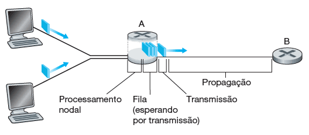

Atraso em Redes de Comutação de Pacotes
Confira agora as principais reflexões sobre os parâmetros de avaliação.
O ideal seria que os serviços da internet transferissem dados entre sistemas finais, de modo instantâneo e sem nenhuma perda. Porém, as redes de computadores restringem a quantidade de dados que podem ser transferidos entre sistemas finais, apresentam atrasos entre sistemas finais e ainda podem perder pacotes. As leis da física introduzem atraso e perda.
Para ser possível a formulação de propostas de soluções para os problemas encontrados no funcionamento das redes de computadores, é recomendável examinar e quantificar esse contexto como parâmetros para avaliação das redes. Por isso, estudaremos os parâmetros relacionados ao atraso, à perda e vazão em redes de computadores.
Tipos de Atraso
Confira agora os principais pontos sobre tipos de atraso.
Considere um pacote enviado de um nó por meio do roteador A até o roteador B. Um pacote somente pode ser transmitido do roteador A ao B, se não houver nenhum outro pacote sendo transmitido pelo enlace e se não houver outros à sua frente na fila. Se o enlace estiver ocupado, ou com pacotes à espera, o recém-chegado entrará na fila (buffer, ou memória, do roteador). A imagem a seguir ilustra os elementos citados. Veja!

O atraso de nó no roteador A
Um pacote começa em um sistema final de origem, passa por vários roteadores até ser entregue em outro sistema final de destino. Quando um pacote viaja de um dispositivo ou um nó (sistema final ou roteador) ao nó subsequente (sistema final ou roteador), sofre, ao longo desse caminho, diversos tipos de atraso em cada nó. Os mais importantes deles são o atraso de processamento nodal, o atraso de fila, o atraso de transmissão e o atraso de propagação. Eles formam o atraso total.
O desempenho de muitas aplicações da internet é muito afetado por esses atrasos que ocorrem na rede. Vamos detalhá-los?
Atraso de Processamento
Tempo gasto em um dispositivo para examinar o cabeçalho do pacote e determinar por qual saída deve encaminhá-lo.
Atraso de Fila
Tempo decorrido enquanto um pacote espera para ser transmitido no enlace. Se a fila (buffer) estiver vazia, e nenhum outro pacote estiver sendo transmitido naquele momento, então o tempo de fila de nosso pacote será zero. Por outro lado, se o tráfego estiver intenso e houver muitos pacotes também esperando para serem transmitidos, o atraso de fila será longo.
Atraso de Transmissão
Tempo exigido para empurrar (isto é, transmitir) todos os bits do pacote para o enlace. É uma função do comprimento do pacote e da taxa de transmissão do enlace, mas nada tem a ver com a distância entre os roteadores.
Atraso de Propagação
Tempo necessário para propagar o bit desde o início do enlace até o próximo nó. O bit se desloca pelo meio de acordo com a velocidade de propagação do enlace, a qual depende do meio físico, isto é, se o meio utilizado é fibra ótica, fios de cobre e assim por diante. Este atraso é diretamente relacionado à distância entre os roteadores, mas nada tem a ver com o comprimento do pacote ou com a taxa de transmissão do enlace.
Importante ressaltar que os tipos de atraso se refletem nas aplicações de maneira diferente. As aplicações de tempo real, que têm interatividade, como jogos interativos, vídeo e áudio conferências, são mais suscetíveis ao atraso de propagação. Por outro lado, as aplicações que transferem um grande volume de dados, como transferências de arquivos, têm o atraso de transmissão como o ponto crítico.
Comentário
O atraso de fila pode variar de pacote para pacote. Por exemplo, se dez pacotes chegarem a uma fila vazia ao mesmo tempo, o primeiro pacote não sofrerá nenhum atraso de fila, ao passo que o último sofrerá um relativamente grande (enquanto espera que os outros nove sejam transmitidos). O processo de chegada a uma fila é aleatório.
Essa variação do atraso de fila causa um efeito chamado jitter (variação de atraso), que impacta significativamente as aplicações de streaming (multimídia), as quais precisam reproduzir os pacotes em intervalos regulares. Portanto, a variação do atraso impactará a reprodução em intervalos regulares, tendo em vista que os pacotes não chegarão com atrasos regulares.
O que você achou do conteúdo?
Menu
Redes de computadores e a internet
Módulos